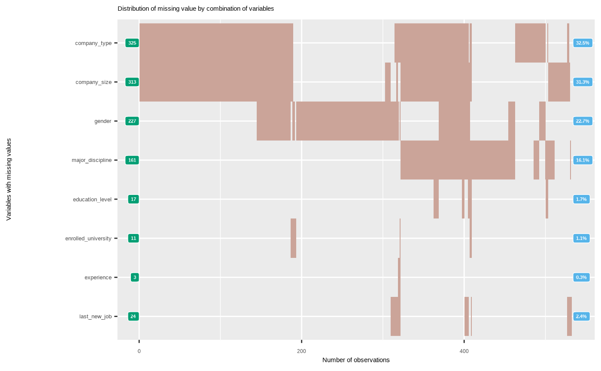

Visualize distribution of missing value by combination of variables.
plot_na_hclust(
x,
main = NULL,
col.left = "#009E73",
col.right = "#56B4E9",
typographic = TRUE,
base_family = NULL
)data frames, or objects to be coerced to one.
character. Main title.
character. The color of left legend that is frequency of NA. default is "#009E73".
character. The color of right legend that is percentage of NA. default is "#56B4E9".
logical. Whether to apply focuses on typographic elements to ggplot2 visualization. The default is TRUE. if TRUE provides a base theme that focuses on typographic elements using hrbrthemes package.
character. The name of the base font family to use for the visualization. If not specified, the font defined in dlookr is applied. (See details)
a ggplot2 object.
Rows are variables containing missing values, and columns are observations. These data structures were grouped into similar groups by applying hclust. So, it was made possible to visually examine how the missing values are distributed for each combination of variables.
The base_family is selected from "Roboto Condensed", "Liberation Sans Narrow", "NanumSquare", "Noto Sans Korean". If you want to use a different font, use it after loading the Google font with import_google_font().
# \donttest{
# Generate data for the example
set.seed(123L)
jobchange2 <- jobchange[sample(nrow(jobchange), size = 1000), ]
# Visualize hcluster chart for variables with missing value.
plot_na_hclust(jobchange2)
# Change the main title.
plot_na_hclust(jobchange2, main = "Distribution of missing value")
# Non typographic elements
plot_na_hclust(jobchange2, typographic = FALSE)

# }